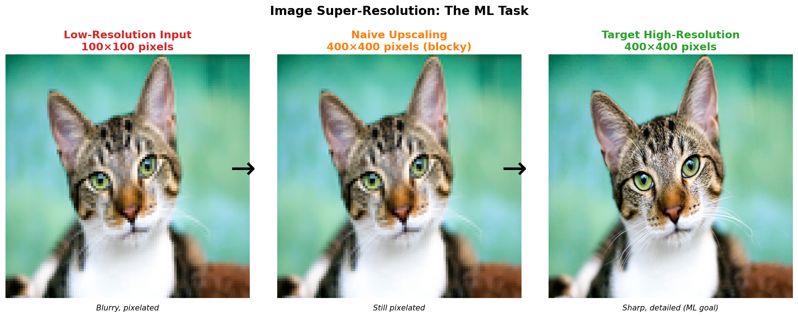
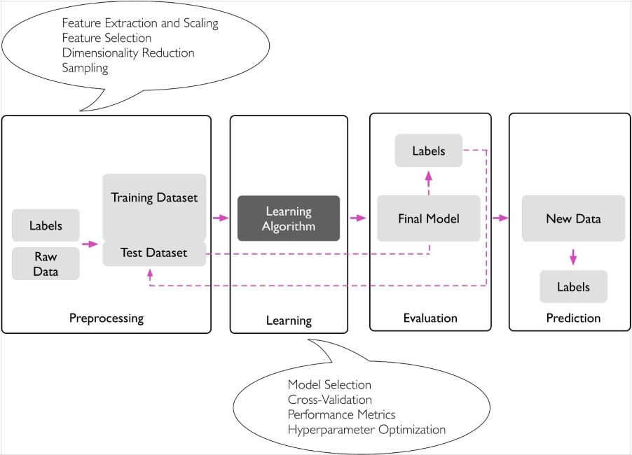
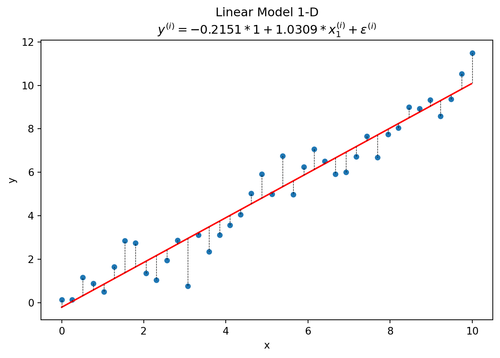
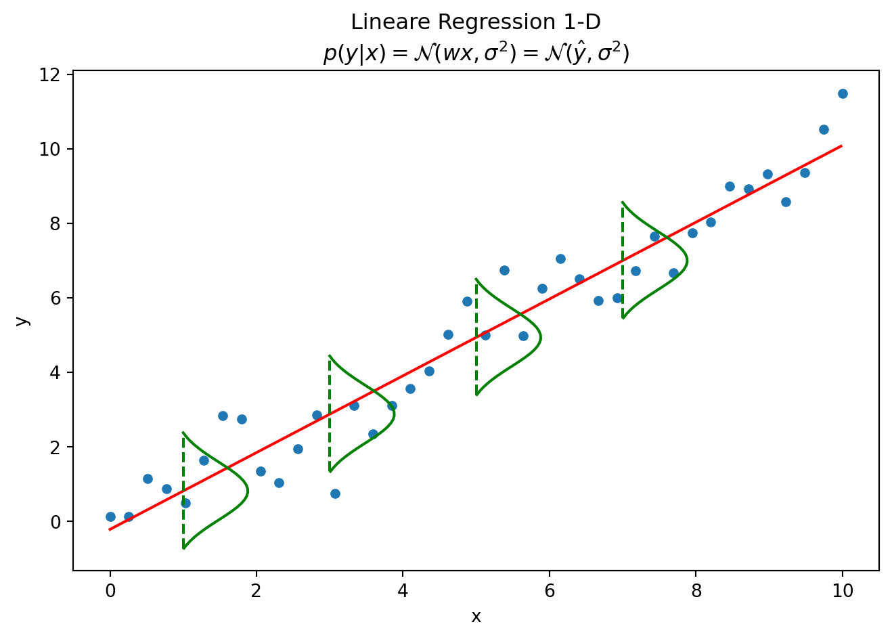

def train(observations, labels):
"""Train a Model"""
# Fit Model here
return model
def predict(test_observations, model):
"""Predict"""
predictions = model(test_observations)
return predictions1 - Machine Learning Basics
TipLearning Objectives
After reviewing this material you should be able to:
- Describe the data-driven approach to machine learning and its core workflow (collect, train, evaluate).
- Define what a model is mathematically and distinguish between parameters and hyperparameters.
- Explain the role of optimization in fitting models and identify common cost/loss functions.
- Justify why train/validation/test splits are necessary for unbiased model evaluation.
- Interpret the machine learning pipeline from data acquisition through deployment.
- Apply model selection principles to choose between competing models.
TipTLDR Recap
The Data-Driven Approach:
def train(images, labels):
return model # Fit model to data
def predict(test_images, model):
return model(test_images) # Make predictionsCore Concepts:
- Model: Function \(f_{\theta}(\mathbf{x}) = \hat{y}\) mapping inputs to outputs via learned parameters \(\theta\)
- Optimization: Find parameters that minimize loss: \(\mathsf{argmin}_{\theta} J(f_{\theta}(\mathbf{X}), \mathbf{y})\)
- Hyperparameters: Settings that control learning (learning rate, regularization) but aren’t learned from data
- Loss Functions: Measure prediction error (MSE for regression, cross-entropy for classification)
The ML Pipeline:
- Data Acquisition → Collect and prepare labeled dataset
- Preprocessing → Normalize, encode features, reduce dimensionality
- Model Training → Optimize parameters on training set
- Model Selection → Compare models on validation set
- Evaluation → Assess final model on held-out test set
- Deployment → Integrate into production systems
Train/Validation/Test Splits:
- Train set: Used to optimize model parameters
- Validation set: Used to compare models and tune hyperparameters
- Test set: Final evaluation to estimate real-world performance (use only once!)
- Why? Training metrics are too optimistic; need unbiased performance estimates
Key Insight: The test set represents “future unseen data” - touching it during development leads to overfitting and unreliable performance estimates.
Example Application: Image super-resolution (shown in Figure 1):
- Training data: Low-res/high-res image pairs
- Model: CNN that learns to add high-frequency details
- Loss: Pixel-wise difference between predicted and true high-res
- Evaluation: PSNR, SSIM, perceptual similarity metrics
1 The Data-Driven Approach
We follow a data-driven approach in machine learning to solve various tasks. Typically, the process involves:
- Collecting a dataset of observations (e.g. images) and their labels.
- Using a machine learning algorithm to train a model that learns to associate observations with labels.
- Evaluating/applying the model on new data.
Now let’s see this data-driven approach applied to a concrete computer vision task: image super-resolution. This example demonstrates how the same train() and predict() framework works for complex image processing problems.

🤔 Think About It
How would you train a model for image super-resolution? The task is to upscale low-resolution images to high-resolution with the best possible quality.
Key considerations
- Training data: Pairs of low-res and high-res images (can be created by downsampling high-res images)
- Loss function: Measure difference between predicted high-res and actual high-res
- Architecture: CNN that learns to add high-frequency details
- Evaluation: Visual quality metrics (PSNR, SSIM) and perceptual similarity
2 Machine Learning Process
When modeling data, one often follows certain process steps: acquiring data, preparing it, training multiple models, selecting the most suitable model, estimating its future performance, and finally deploying it in production. Figure 2 illustrates this process graphically.

At the core of a machine learning application is typically a mathematical model, which is fitted to a dataset so that it can then be used for prediction (in supervised learning). We often refer to ‘models’, meaning the mathematical description of the dataset.
3 Models
A model is typically described as a function of a data point, generating an output \(\hat{y}\):
\[\begin{align*} f(\mathbf{x}^{(i)}) = \hat{y}^{(i)} \end{align*}\]
Most models have parameters or coefficients that describe the model. The entirety of all parameters is denoted by \(\theta\).
\[\begin{align*} f_{\theta}(\mathbf{x}^{(i)}) \text{ or } f(\theta, \mathbf{x}^{(i)}) \end{align*}\]
For simplicity, we often omit \(\theta\): \(f(\mathbf{x}^{(i)})\)
NoteLinear Regression Example
To make this concrete, consider linear regression, one of the simplest models. It learns a straight line through data:
\[f_\theta(x) = \theta_0 + \theta_1 x\]
Where the parameters are:
- \(\theta_0\) (intercept): Where the line crosses the y-axis
- \(\theta_1\) (slope): How steep the line is
Code
import numpy as np
import matplotlib.pyplot as plt
import seaborn as sns
from sklearn.linear_model import LinearRegression
from typing import Callable
def create_linear_model_string(lr, feature_names=None):
"""Create string representation of linear model"""
intercept = lr.intercept_.flatten()
coefficients = lr.coef_.flatten()
params = np.concatenate([intercept, coefficients])
if not feature_names:
feature_names = [f"x_{i + 1}^{{(i)}}" for i in range(0, len(coefficients))]
param_strings = [
f"{value:.4f} * {name}"
for name, value in zip(["1"] + list(feature_names), params)
]
formula = " + ".join(param_strings)
return f"$y^{{(i)}} = {formula} + \\epsilon^{{(i)}}$"
def calculate_grid_1d(X: np.ndarray, model, step_size: float = 0.02):
"""Calculates Model Predictions on a Grid over the Space of X"""
assert X.ndim == 1
x_grid = np.arange(X.min(), X.max(), step_size)
p = model.predict(x_grid.reshape(-1, 1))
return x_grid, p.ravel()
def add_noise(x: np.ndarray, scale: float = 0.5, seed: int = 123):
"""Add random noise to inputs"""
rng = np.random.default_rng(seed)
return x + rng.normal(loc=0.0, scale=scale, size=x.shape)
def create_dataset(
fun: Callable = lambda x: x,
n_samples: int = 20,
x_min: int = 0,
x_max: int = 10,
noise_scale: float = 0.3,
seed: int = 0,
):
"""Sample Data from True Function."""
x = np.linspace(0, x_max, n_samples).reshape(-1, 1)
y = fun(x)
# prevent negative values
y_noise = np.clip(add_noise(y, scale=noise_scale, seed=seed), 0, np.inf)
return x, y, y_noise
# Create synthetic dataset (from lecture 2)
X, y, y_noise = create_dataset(n_samples=40, noise_scale=1.0)
# Fit linear regression model
lr = LinearRegression()
lr = lr.fit(X, y_noise)
y_pred = lr.predict(X)
x_grid, y_grid = calculate_grid_1d(X.ravel(), lr)
# Create visualization
fig, ax = plt.subplots(figsize=(8, 5))
form = create_linear_model_string(lr)
title = "Linear Model 1-D\n" + form
_ = sns.scatterplot(x=X.ravel(), y=y_noise.ravel(), ax=ax).set(
title=title, xlabel="x", ylabel="y"
)
_ = sns.lineplot(x=x_grid, y=y_grid, color="red")
_ = ax.vlines(
X.ravel(), y_pred, y_noise, color="black", linestyles="dashed", linewidths=0.5
)
plt.show()
print(f"θ₀ (intercept): {lr.intercept_[0]:.3f}")
print(f"θ₁ (slope): {lr.coef_[0][0]:.3f}")
θ₀ (intercept): -0.215
θ₁ (slope): 1.031Key insight: The model \(f_\theta(x)\) transforms any input \(x\) into a prediction \(\hat{y}\) using the learned parameters \(\theta_0, \theta_1\).
4 Optimization
The coefficients are fitted to a training dataset through an optimization procedure.
The optimization procedure can often be influenced by additional factors, called hyperparameters (\(\alpha, \lambda, \dots\)). These cannot be directly optimized.
The function/quantity to be optimized is usually called the cost function, i.e., cost function (other terms include objective function, loss function, etc.). We use \(J(\cdot)\) to denote the cost function. Often, the cost function is also referred to as the loss function \(L(\cdot)\). We use \(l(\cdot)\) for the per-sample loss, i.e., the computation of the cost function on a single sample.
Our goal is to find a model (and its parameters) that minimizes the cost function:
\[\begin{equation*} \mathsf{argmin}_{\theta, \lambda} J\Big(f_{\theta, \lambda}(\mathbf{X}), \mathbf{y}\Big) \end{equation*}\]
NoteLinear Regression Loss Function
For linear regression, we measure prediction errors using Mean Squared Error (MSE) or the Least Squares approach:
\[J(\theta) = \frac{1}{n}\sum_{i=1}^n (y^{(i)} - f_\theta(x^{(i)}))^2\]
Often a factor \(\frac{1}{2n}\) is used to make the derivative computation more elegant:
\[J(\theta) = \frac{1}{2n}\sum_{i=1}^n (y^{(i)} - f_\theta(x^{(i)}))^2\]
Intuition:
- \((y^{(i)} - f_\theta(x^{(i)}))\) is the residual (error) for data point \(i\)
- Squaring penalizes large errors more than small ones
- We average over all \(n\) training points
Optimization goal: Find parameters \(\theta^* = [\theta_0^*, \theta_1^*]\) that minimize MSE:
\[\theta^* = \mathsf{argmin}_{\theta} J(\theta)\]
Code
from scipy.stats import norm
def calculate_x_y_coordinates_of_normal(x, y, std):
"""Calculate the x and y coordinates of a vertically drawn normal distr
at location x and y
"""
width_of_distr = 2.0
rv_norm = norm(loc=0, scale=std)
y_values_norm = np.arange(0 + 2 * std, 0 - 2 * std, -0.1)
x_values_norm = rv_norm.pdf(y_values_norm)
x_values_norm = (
np.abs(x_values_norm * width_of_distr)
- np.min(np.abs(x_values_norm) * width_of_distr)
+ x
)
y_values_norm += y
return x_values_norm, y_values_norm
# Use the same dataset from Models section
std = np.std(y_noise - y_pred)
fig, ax = plt.subplots(figsize=(8, 5))
form = "$p(y|x) = \\mathcal{N}(wx, \\sigma^2) = \\mathcal{N}(\\hat{y}, \\sigma^2)$"
title = "Lineare Regression 1-D\n" + form
_ = sns.scatterplot(x=X.ravel(), y=y_noise.ravel(), ax=ax).set(
title=title, xlabel="x", ylabel="y"
)
_ = sns.lineplot(x=x_grid, y=y_grid, color="red")
for x_loc in np.arange(1, 9, 2.0):
y_loc = lr.predict(np.array([x_loc]).reshape(-1, 1))
x_values_norm, y_values_norm = calculate_x_y_coordinates_of_normal(
x=x_loc, y=y_loc.ravel(), std=std
)
_ = ax.plot(x_values_norm, y_values_norm, color="green", linewidth=1.5)
_ = ax.vlines(
x=x_loc,
ymin=np.min(y_values_norm),
ymax=np.max(y_values_norm),
colors="green",
ls="--",
lw=1.5,
)
plt.show()
# Compute and display the MSE
from sklearn.metrics import mean_squared_error
mse = mean_squared_error(y_noise, y_pred)
print(f"Training MSE: {mse:.3f}")
print(f"Standard deviation of residuals: {std:.3f}")
print(f"The optimization found: θ₀*={lr.intercept_[0]:.3f}, θ₁*={lr.coef_[0][0]:.3f}")
Training MSE: 0.611
Standard deviation of residuals: 0.782
The optimization found: θ₀*=-0.215, θ₁*=1.031Geometric interpretation: Among all possible lines, we found the one with the smallest average squared distance to the data points.
Usually, preprocessing of variables precedes the learning of the coefficients. Forms of preprocessing include standardizing, normalizing, feature encoding, dimensionality reduction, and more. This preprocessing also affects the optimization procedure and can be considered hyperparameters.
5 Model Selection
Model selection is one of the most important and complex components of the machine learning process. This step involves comparing multiple models and selecting the “best” model for the task to be modeled. Which model is the “best” must be defined based on a metric that measures the model’s performance.
Evaluation Metrics are crucial for quantifying model performance and vary depending on the problem type. For regression tasks, common metrics include:
- Mean Squared Error (MSE): \(\text{MSE} = \frac{1}{n}\sum_{i=1}^n (y_i - \hat{y}_i)^2\), which penalizes large errors heavily
- Mean Absolute Error (MAE): \(\text{MAE} = \frac{1}{n}\sum_{i=1}^n |y_i - \hat{y}_i|\), which treats all errors equally
For classification tasks, key metrics include:
- Accuracy: How often is the model correct (fraction of correct predictions).
- Precision: If it predicts a specific class, how often is it correct (true positives / predicted positives).
- Recall: How many of the target class does the model identify correctly (true positives / actual positives).
- F1-Score: Precision can be traded against Recall, to balance both we can report F1 (harmonic mean of precision and recall).
The choice of metric depends on the specific application—for example, in medical diagnosis, recall might be more important than precision to avoid missing positive cases. Different ML-frameworks will implement these and many other evaluation metrics.
If we calculate the value of the metric on the training dataset, our model is usually too optimistic about its general performance. This is because the data points in the training dataset were directly used to optimize the cost function, and the model coefficients are thus optimally adjusted to them. New data points, for which predictions are to be made, could not have been used for optimization. Therefore, a dataset is usually divided into a training set and a test set. The model is trained with the training set and its performance is measured on the test set. When comparing many models, it is advisable to compare them on a separate validation set (see Figure 3) and evaluate only the best model on the test set. This makes the estimate on the test set more accurate.

6 References
Raschka, Sebastian, and Vahid Mirjalili. 2020. Python Machine Learning: Machine Learning and Deep Learning with Python, Scikit-Learn, and TensorFlow. Second edition, fourth release,[fully revised and updated]. Expert Insight. Birmingham Mumbai: Packt Publishing.